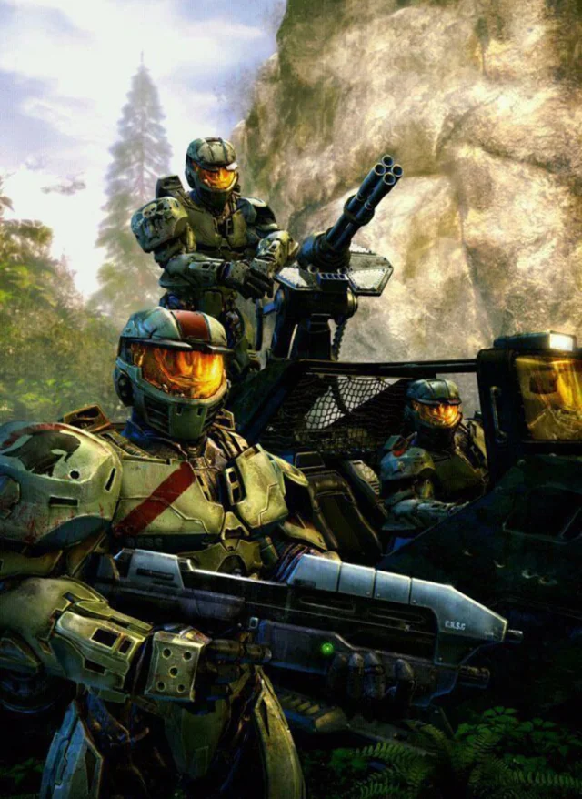

The SPARTANS
While many outsiders view them as single-minded, the Spartan-IIs remain independent thinkers. Dr. Halsey's intent was to mold the candidates into effective soldiers as some of her colleagues within ONI suggested. She believed that for the Spartans to be truly efficient, they must understand and embrace the significance of their mission. Consequently, the Spartans possess a profound understanding of their roles as protectors and the weight of their responsibilities. They embrace being Spartans as both a necessity and a calling.
The training of the Spartan-IIs emphasized dedication to duty and the importance of winning at any cost, values they remain committed to. They often ignore concerns about their personal health as long as there is a mission to complete. As a result, they generally prefer planetary operations to being stationed aboard starships without the ability to contribute to an engagement.
The Spartan-IIs share a strong sense of solidarity and camaraderie, often considering their fellow Spartans as family. This bond is reflected in their unique internal habits and signals, communicated through subtle gestures and body language that are largely indecipherable to outsiders. Only a select few, including Dr. Halsey and CPO Mendez, were privy to their best-kept secrets. Their familiarity with each other's body language allows them to function in perfect synergy during combat, with teamwork abilities described as almost telepathic.